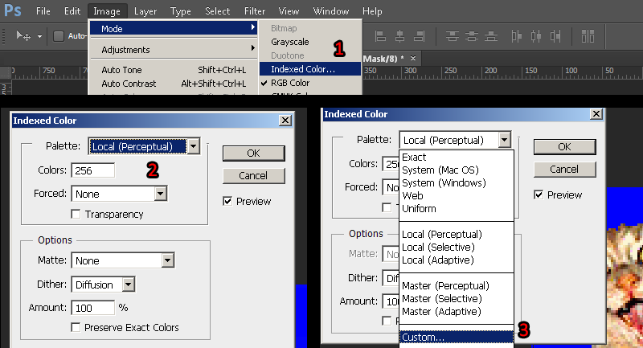
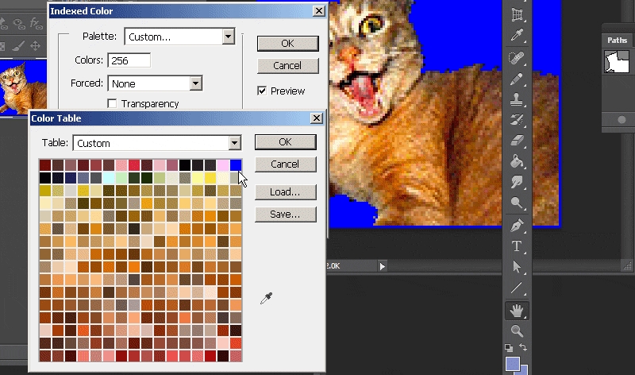
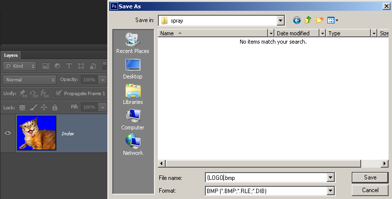

This method of creating spraylogos with Wally takes some time since we are doing all the things HLtagconverter did manually, however with this method we will be doing fine adjustments, better image dithering, and resampling to create a better spraylogo. Using wally is the only way to obtain the slightly higher Sven Co-Op limit so we will be showing that here.
1) Using your pen tool, make a complete path around the image. When done, go to the Paths tab and select the work path. Press the dotted line button to load path as selection. With the path now a selection, go to the layers tab and press the button to add a layer vector mask
2) The image is now masked off. Create a 50% grey fill (Bring up the fill window with shift-F5) layer underneath your image. This grey layer is to to check if any background was left in the mask. With the layer mask selected in the layers menu, make any changes to the layer mask with the brush tool (Brush with black hides and brush with white shows). A further adjustment can be made to the mask as a whole via the "Refine edge" optional choice.
3) We will now prepare the canvas for resizing, but before we do that we need to get an idea on what aspect would fit our image the best. Ive put together a small list of common spraylogo sizes including the larger sizes avalible from the Chart (reverse the ratios for a different orientation).
112X112 = 1:1
112X128 = 7:8
96X144 = 2:3
80X176 = 5:11
96X96 = 1:1
96X112 = 6:7
80X144 = 5:9
64X176 = 4:11
Choose one and put the ratio into your rectangular marquee by setting "Style" to "fixed ratio". The arrow buttons inbetween swaps the ratio. Move your selection around your object and keep it close. If it is not to your satisfaction, go with a different ratio/refer to the size chart. Once you are satisfied, press crop.
Then go to image>resize image. For this image I am going with 112X128 in the resize field. Choose "Bicubic Sharper" as your resize filter.
4) Fill the grey check layer with pure RGB blue [HEX: #0000ff / RGB: 0 0 255]. Select the image layer and do any enhancements you like. Im using unsharp mask filter. Sometimes you can do a gradual sharpen by running the filter twice at different settings. I also threw in a layer adjust for "Vibrance".
5)Select the layer mask by clicking it in your layers menu. You should see a box around the thumbnail like so when its selected. With the mask selected, go to Image>Adjustments>Threshold. We are using threshold because GoldSrc images use only 1 colour for transparency. This makes the mask into a hard edge with no semi-transparent areas. Adjust the threshold slider to your liking. This has the added effect of removing any nasty white fringes left behind especially if you used other selection methods like magic wand.
Once the layer is thresholded, you can make some final adjustments to your mask with the pencil tool. One important thing to note is if you have a spray that has pixels that touch the edge, it should have a layer of 1pixel padding all around. I did this by using the pencil tool on the mask by shift clicking a 1pixel line.
6)The image is now ready for 8bit index conversion.
However, if you do not want to fine tune color dithering or palette selection you can flatten the image and save as BMP format 24bit with filename as "{LOGO.bmp". Then import your BMP into wally and let it auto-convert the colors for you. If you are doing this skip to step 8.
Convert the texture indexed color by going to mode> Index.. and set to any of the "local" palettes (perceptual, selective, and adaptive*). Preview the image. If your image has gradients than start to get a "banding effect", you can lessen these harsh edges by using the Dithering option. Dithering scatters pixels between transitions to make them somewhat smoother.
*Adaptive algorithm reproduces colors most often in image, Perceptual takes spectrum priority of the eye, Selective favors colors that appear in large areas and graphics.

7)Then, go to the palette rollout and then switch whatever local pallette you have chosen to "custom". With the pallete window open select the pure blue color, press ctrl-click to remove it and re-add it to the final index slot and the bottom right.

8)Save the image as a BMP with the filename "{LOGO".

9)Open wally, and first go to view "options" and make sure Gamma setting is at 1. Go to file and create new Wad package. Choose Half-Life (Wad3) package. You will get an empty tan coloured window. Import your BMP or just drag and drop it into the tan window area. Make sure the blue color is in the final index slot. If not, double click the image, then go to top menu "Colors>edit pallette.." and swap indicies of your blue color to index 255.
Right click to properties for your "tempdecal.wad" file and check "Read only" (this can be done from explorer). This makes sure the decal is not overwritten when making changes in your multiplayer menu. Save the WAD file to the Sven Co-op directory: \Steam\steamapps\common\Sven Co-op\svencoop_addon
The spray in game.